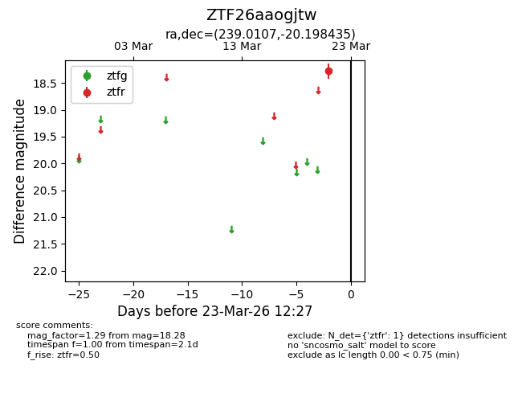
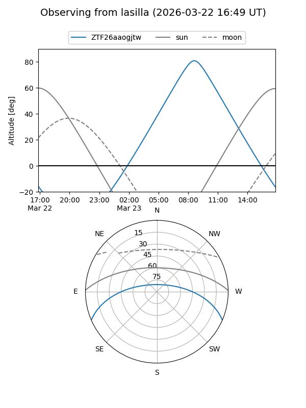
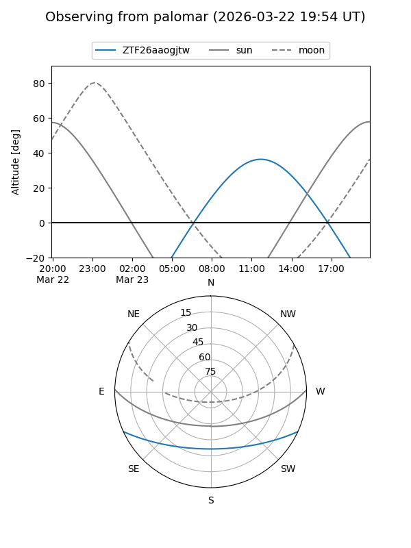

ZTF26aaogjtw
Target ZTF26aaogjtw at 2026-03-23 12:29
Aliases and brokers:
FINK: link
Lasair: link
ALeRCE: link
alt names
ZTF26aaogjtw (ztf,fink_ztf)
Coordinates:
equatorial (ra, dec) = 239.0107,-20.19844
equatorial (HMS+DMS) = 15:56:02.58,-20:11:54.37
galactic (l, b) = (351.1978,+24.90978)
Flags:
Photometry:
last ztfr=18.28
1 ztfr detections
Lightcurve

Visibility


Additional plots